고장사례 및 검색 › 쏘렌토 UM
기아 쏘렌토 UM DPF 효율저하(P2003) — 크리닝으로는 되돌릴 수 없는 상태, 흡·배기 유량 점검 후 DPF 교체와 인젝터 리빌드
- 차량
- 기아 쏘렌토 UM · 163,046 km
- 증상
- 계기판에 배기가스 경고등(DPF 경고등)이 들어온 상태로 입고되었습니다. 다른 업체에서 이미 3종 세트 작업과 DPF 크리닝을 받고 오신 차량입니다. 2018년식 쏘렌토 UM 2.2 디젤, 주행거리 163,046 km입니다
- 고장코드
- P2003
- 원인
- 다른 곳에서 이미 손을 본 차량입니다. 이른바 3종 세트라고 하는 클리닝 작업과 DPF 크리닝까지 받고 오셨는데, 경고등은 그대로였습니다.
P2003은 「DPF 효율저하」입니다. 막혔다는 뜻이 아니라 필터가 제 역할을 못 하고 있다는 뜻입니다. 여기서 길이 갈립니다. 재가 쌓여 막힌 것이면 크리닝으로 살릴 수 있지만, 담체가 과열로 녹아붙거나 깨진 것이면 아무리 씻어도 성능이 돌아오지 않습니다. 저희가 확인한 데이터로는 이 차량은 처음부터 크리닝이 될 상태가 아니었습니다. 한 번 더 씻었어도 결과는 같았을 겁니다. 크리닝 자체가 나쁜 작업은 아닙니다. 될 차와 안 될 차를 먼저 가르는 일이 빠졌을 뿐입니다.
그렇다고 바로 교체를 말씀드리지는 않았습니다. 먼저 차압센서를 봤습니다. 이 센서가 틀린 값을 보내면 멀쩡한 DPF도 막힌 것처럼 보이기 때문입니다. 차에 달린 센서만 믿지 않고 별도의 센서를 같이 달아 두 값을 나란히 놓고 비교했습니다.
이어서 흡기 유량과 배기 유량을 측정하고, 터보와 흡기라인 · 배기라인을 점검했습니다. DPF를 새것으로 갈아도 매연이 많이 나오는 원인이 남아 있으면 새 필터가 또 막히기 때문입니다.
결과는 DPF 교체였습니다. 인젝터 4개는 저희 작업장에서 직접 리빌드해 분사량을 맞췄고, 저압 EGR도 함께 교환했습니다. 연소가 정상으로 돌아와야 새로 들어간 DPF가 오래 갑니다. - 수리내역
- 진단기 전 시스템 스캔 — ENG P2003 DPF 효율저하 확인 · DPF 관련 데이터 확인 — 크리닝으로 회복 가능한 상태인지 판정 · 흡기 유량 측정 · 배기 유량 측정 · 터보 점검 · 흡기라인 점검 · 배기라인 점검 · DPF 차압센서 점검 — 별도 센서를 같이 장착해 값 비교 · DPF 어셈블리 탈거 · 신품 DPF 어셈블리 장착 · 저압 EGR 교환 · 인젝터 4개 전부 탈거 후 자체 리빌드 — 분사량 세팅 · 인젝터 재장착 및 고압 연료라인 체결 · 고장코드 소거 후 재점검
- 교환부품
- DPF(디젤 매연포집필터) 어셈블리 · 저압 EGR 파이프 · 인젝터 가스켓(와셔) · DPF 체결 너트 · 와셔 · 가스켓류
정비 사진 14장
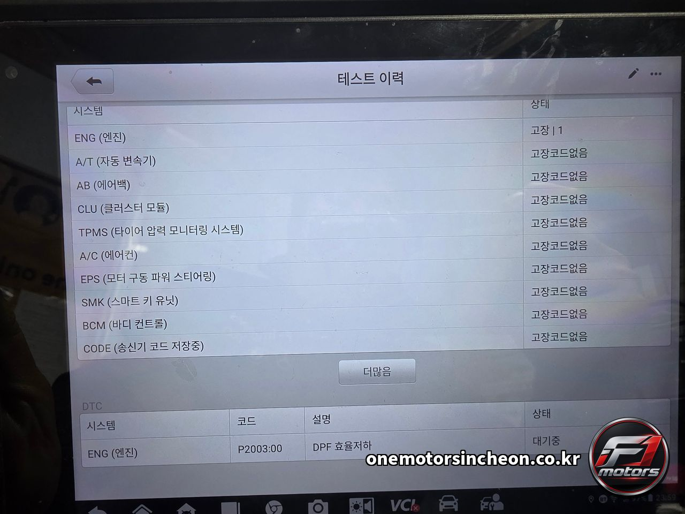
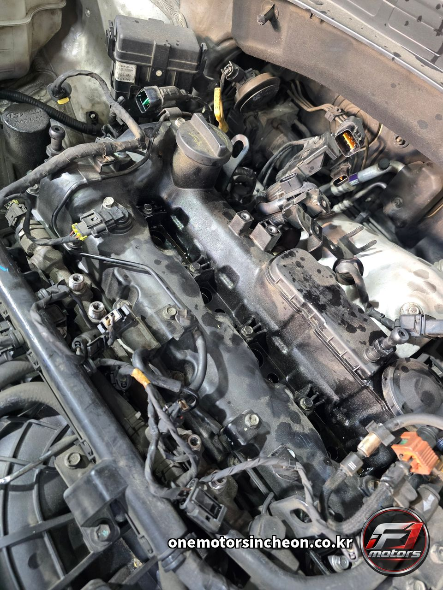
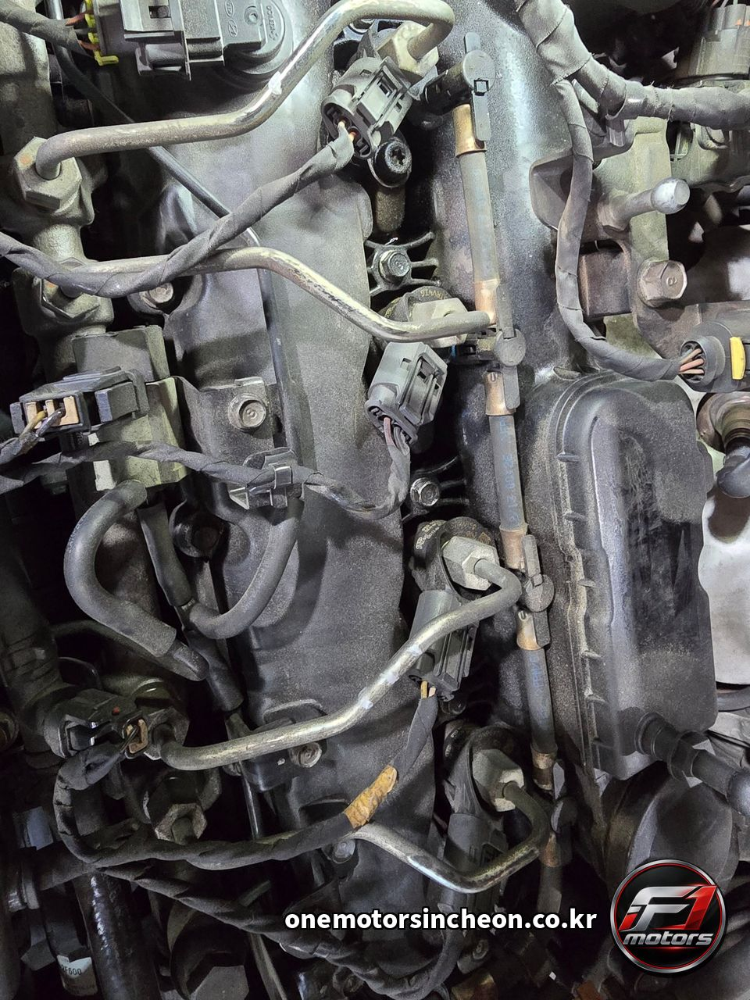
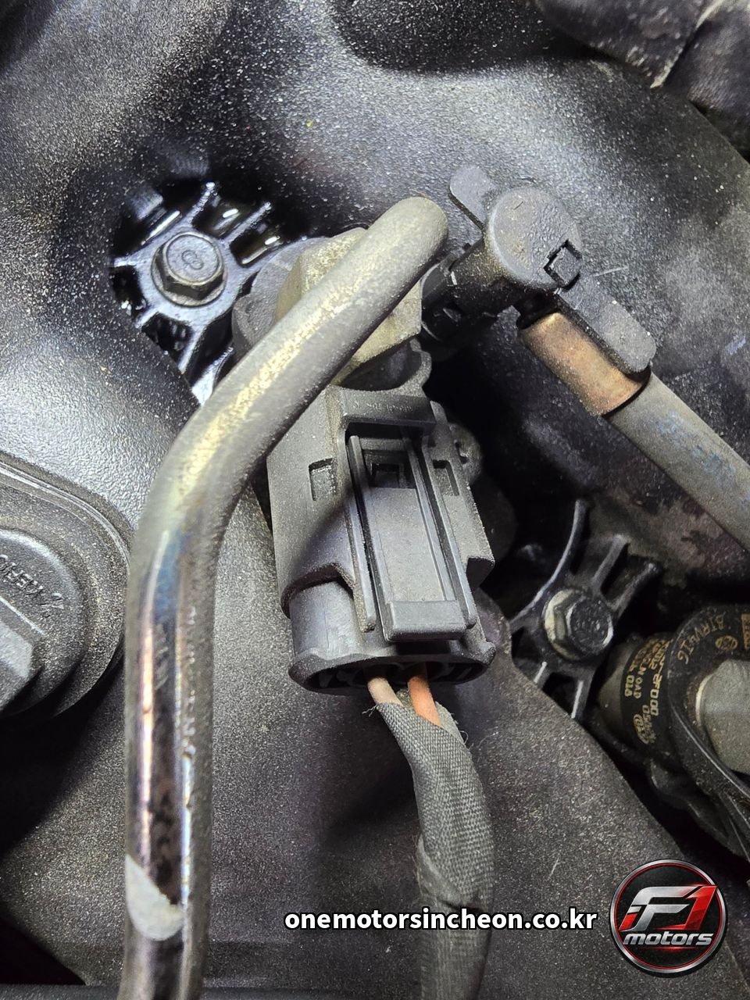
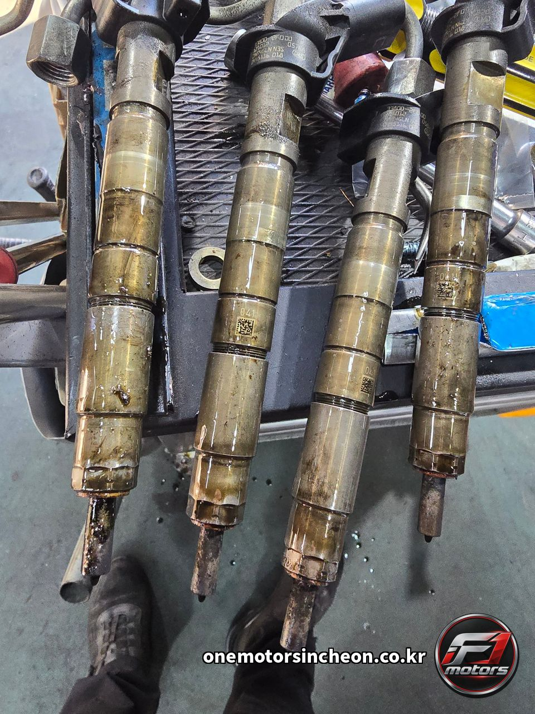
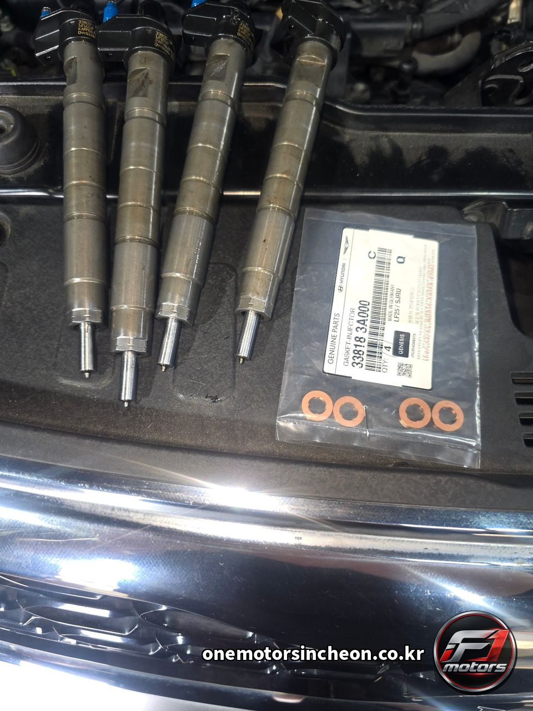
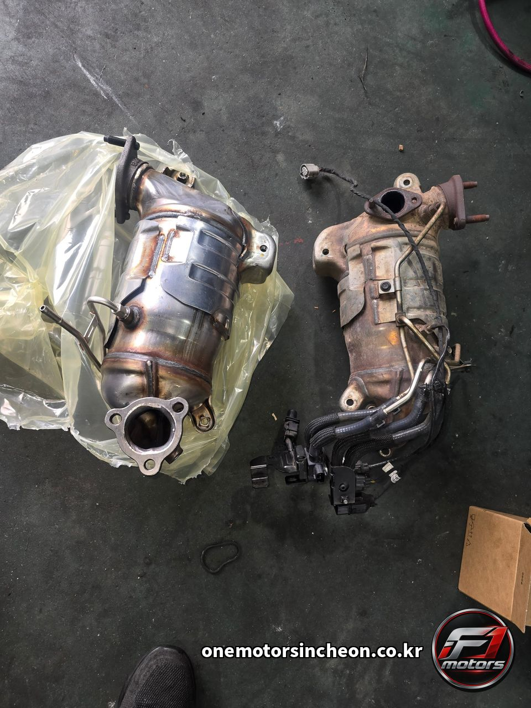
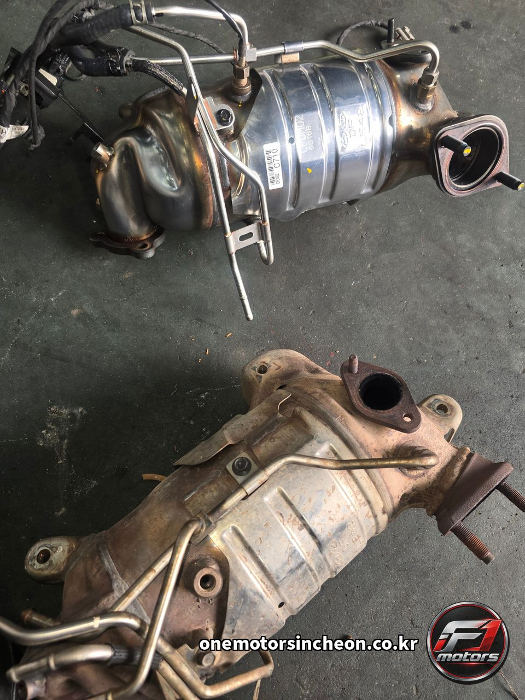
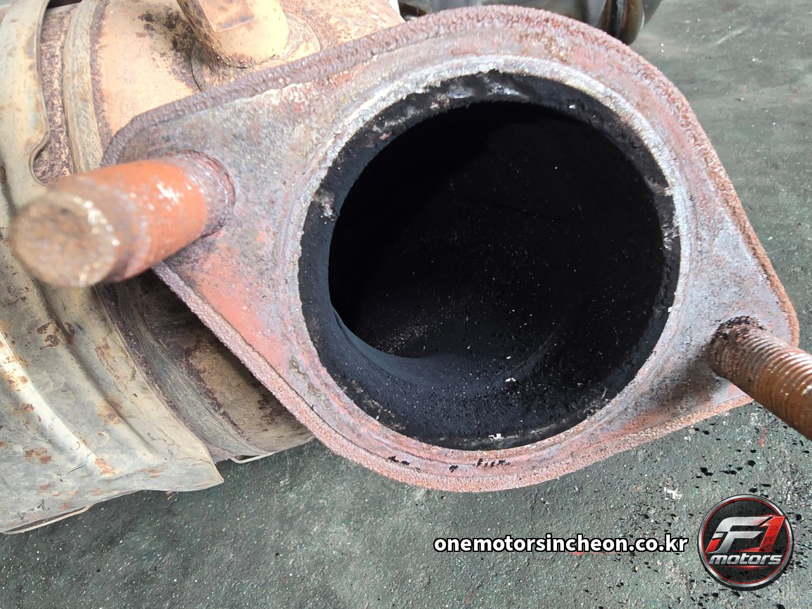
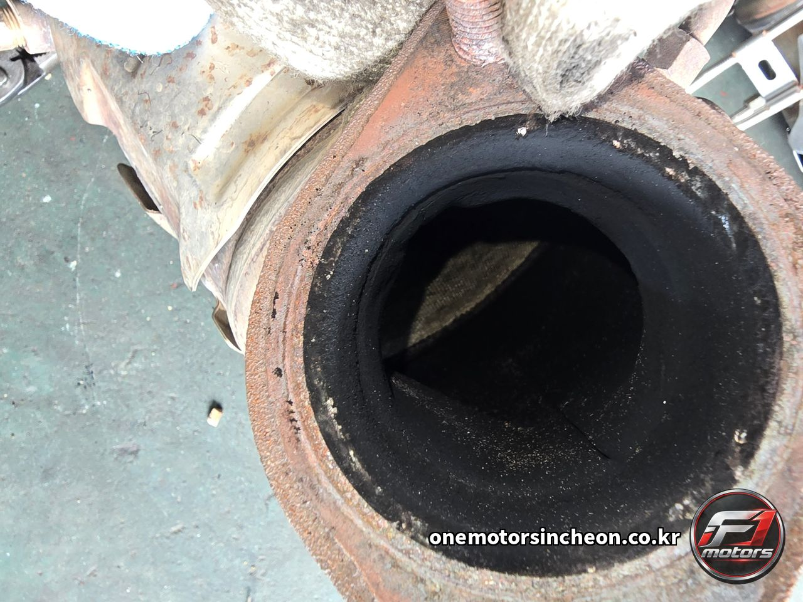
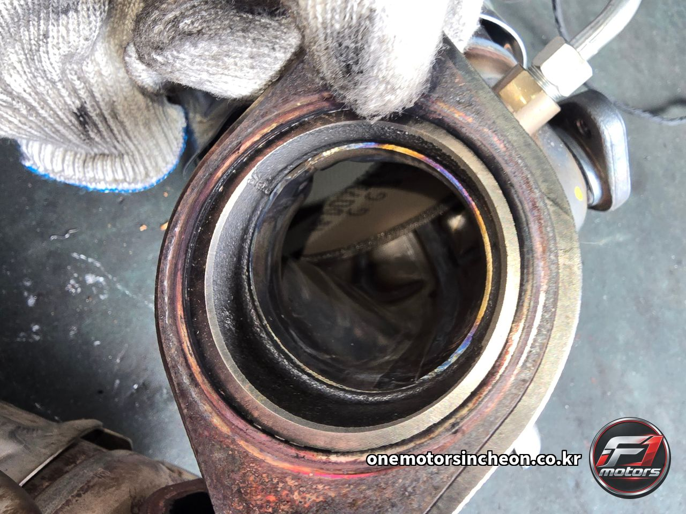
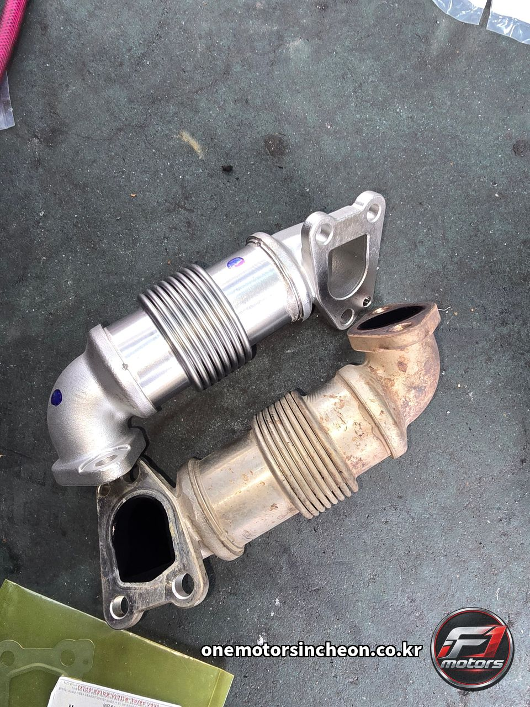
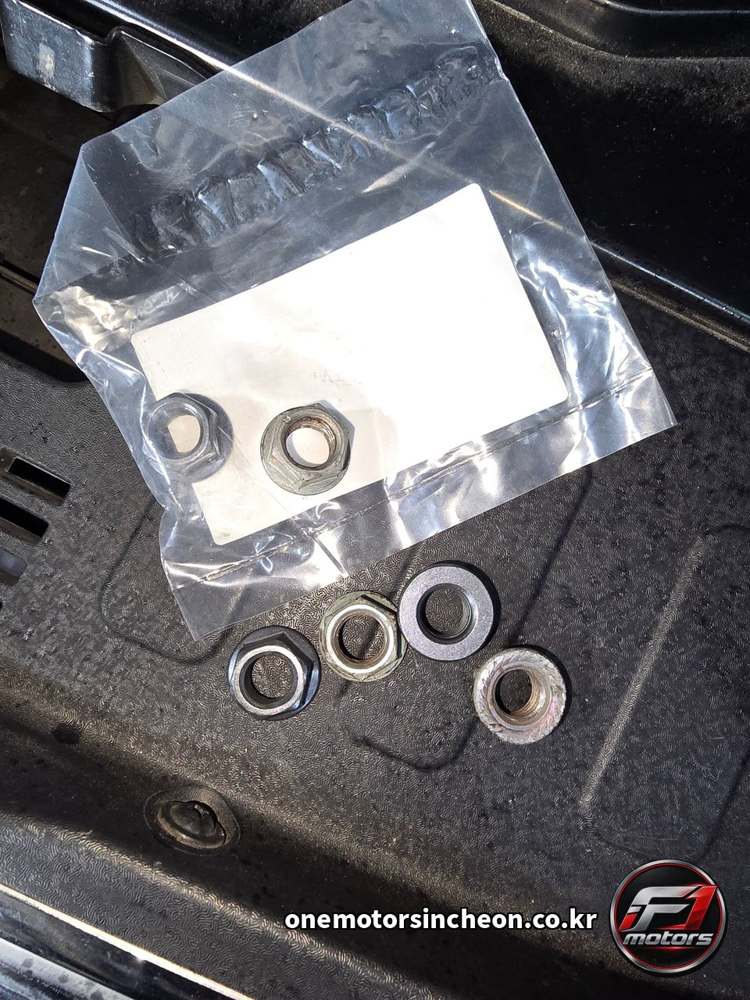
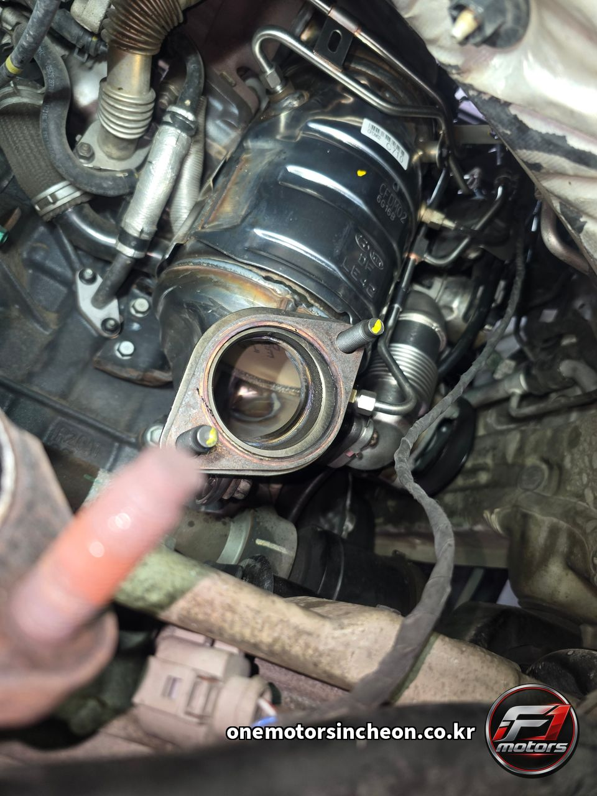
이런 증상으로 찾아오십니다
- 쏘렌토 DPF 효율저하
- DPF 차압센서
- 차압센서 점검
- 차압센서 고장
- DPF 차압센서 교체
- 차압센서 값 이상
- 저압 EGR
- 저압 EGR 교환
- LP EGR
- 인젝터 직접 리빌드
- 인젝터 4개 리빌드
- 쏘렌토 인젝터 리빌드
- P2003
- P2003 DPF 효율저하
- 쏘렌토 UM DPF 경고등
- 쏘렌토 배기가스 경고등
- 기아 쏘렌토 2.2 디젤 DPF
- DPF 경고등 점등
- 배기가스 경고등 점등
- 매연포집필터 경고등
- DPF 크리닝
- DPF 클리닝
- DPF 교체
- DPF 크리닝 했는데 또 경고등이 떠요
- DPF 청소로 되나요 교체해야 하나요
- 크리닝으로 안 되는 DPF
- DPF 재생 안 됨
- DPF 담체 손상
- 인젝터 리빌드
- 인젝터 재생 가능한가요
- 디젤 매연 심함
- 흡기 유량 측정
- 배기 유량 측정
- 터보 점검
- 흡기라인 점검
- 배기라인 점검
- 인천 DPF 교체
- 인천 DPF 크리닝
- 인천 쏘렌토 정비
- 인천 디젤 고장진단
- 제물포구 인젝터 수리
- 인천 커먼레일 인젝터
- 인천 디젤 전문 정비
- 인천에프원모터스
비슷한 증상이 있으시면 전화로 상담해 주세요. 차종과 연식, 증상만 알려주시면 예상 원인을 안내해 드립니다.
인천에프원모터스는 제조사 공식 서비스센터가 아닌 독립 정비업체입니다. 정비 내용은 차량 상태에 따라 달라질 수 있습니다.